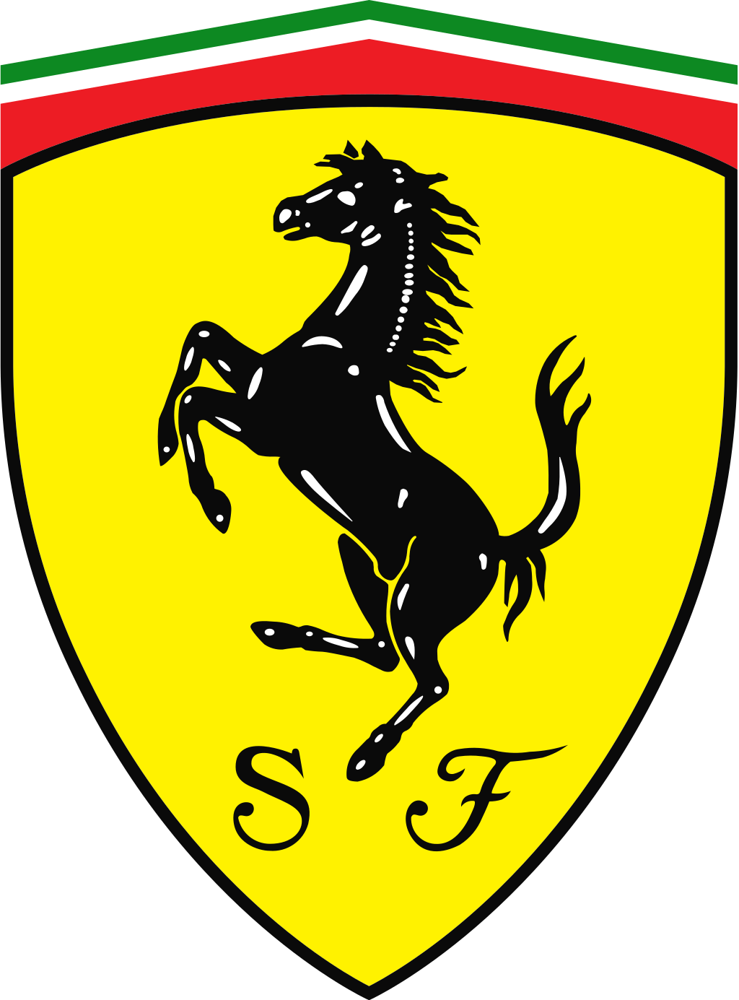
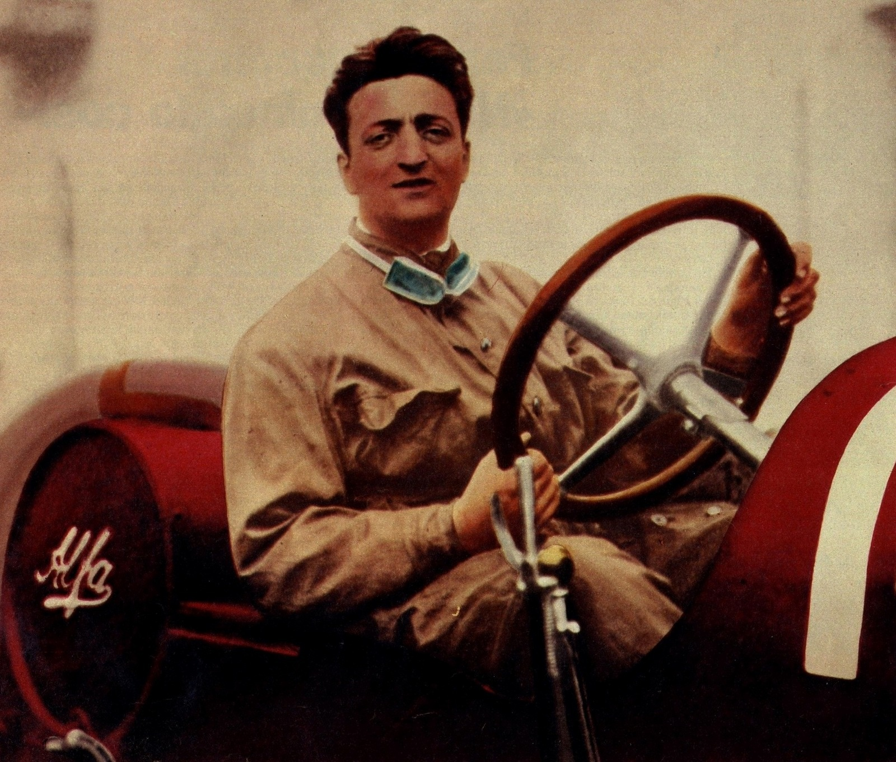
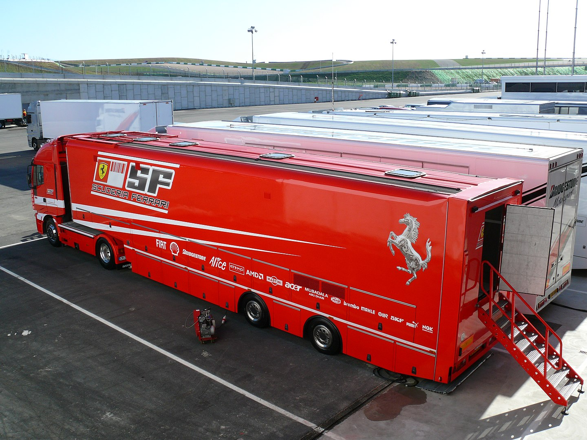
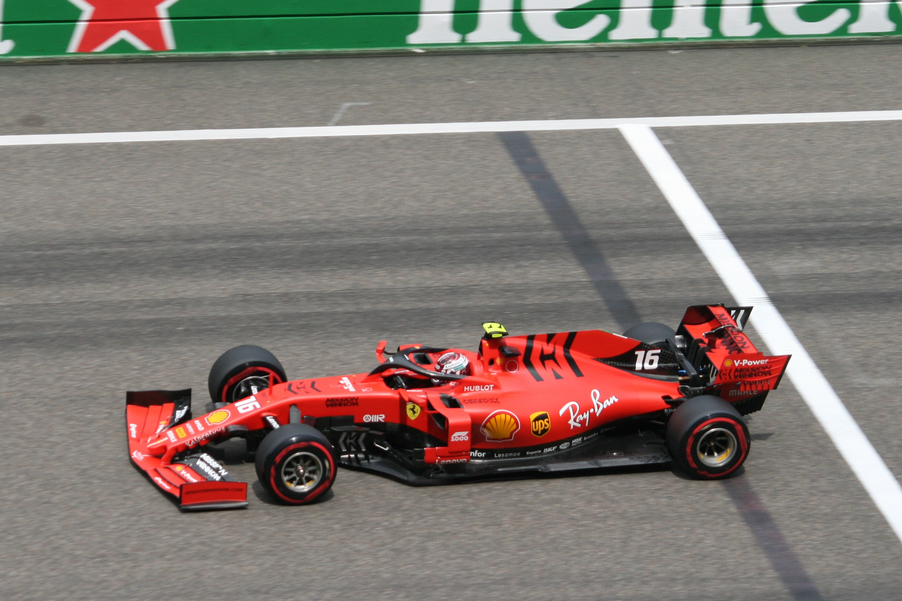
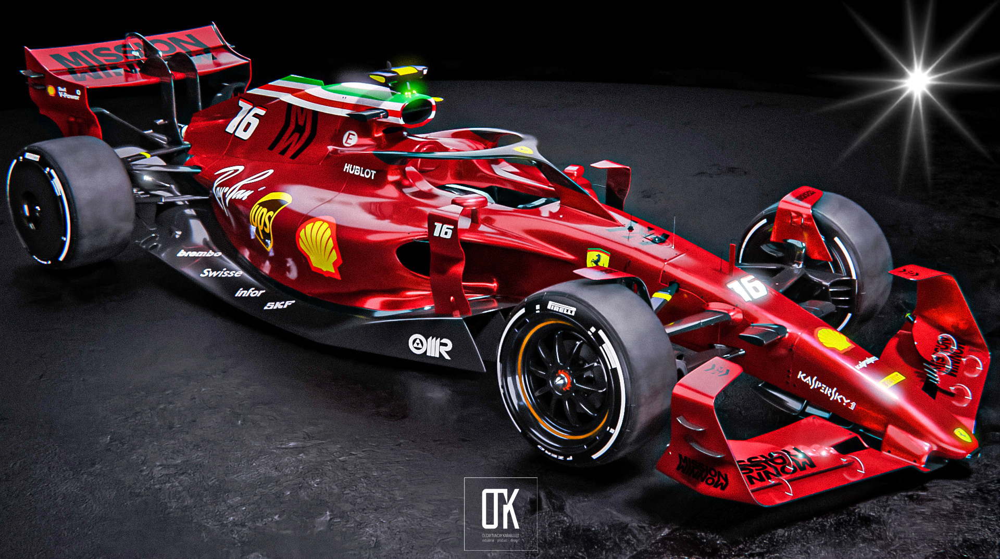
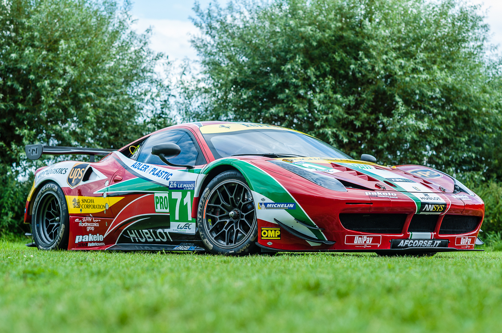
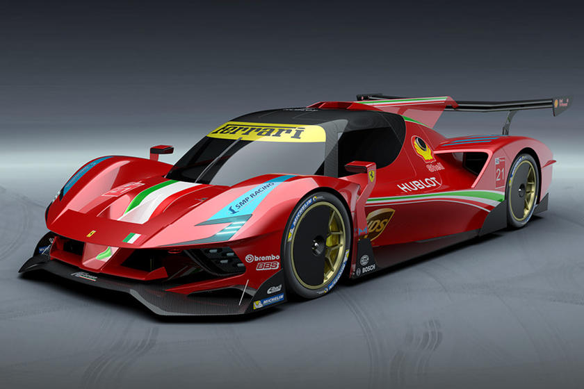

Squderia Ferrari
Scuderia Ferrari S.p.A. (Italian: [skudeˈriːa ferˈraːri]) is the racing division of luxury Italian auto manufacturer Ferrari and the racing team that competes in Formula One racing. The team is also nicknamed "The Prancing Horse", in reference to their logo. It is the oldest surviving and most successful Formula One team, having competed in every world championship since the 1950 Formula One season. The team was founded by Enzo Ferrari, initially to race cars produced by Alfa Romeo, though by 1947 Ferrari had begun building its own cars. Among its important achievements outside Formula One are winning the World Sportscar Championship, 24 Hours of Le Mans, 24 Hours of Spa, 24 Hours of Daytona, 12 Hours of Sebring, Bathurst 12 Hour, races for Grand tourer cars and racing on road courses of the Targa Florio, the Mille Miglia and the Carrera Panamericana. The team is also known for its passionate support base, known as the tifosi. The Italian Grand Prix at Monza is regarded as the team's home race.
As a constructor in Formula One, Ferrari has a record 16 Constructors' Championships, the last of which was won in 2008. Alberto Ascari, Juan Manuel Fangio, Mike Hawthorn, Phil Hill, John Surtees, Niki Lauda, Jody Scheckter, Michael Schumacher and Kimi Räikkönen have won a record 15 Drivers' Championships for the team. Since Räikkönen's title in 2007 the team narrowly lost out on the 2008 drivers' title with Felipe Massa and the 2010 and 2012 drivers' titles with Fernando Alonso. The 2020 Tuscan Grand Prix marked Ferrari's 1000th Grand Prix in Formula One.
Michael Schumacher is the team's most successful driver. Joining the team in 1996 and departing in 2006, he won five consecutive drivers' titles and 72 Grands Prix for the team. His titles came consecutively between 2000 and 2004, and the team won consecutive constructors' titles between 1999 and 2004; this was the team's most successful period. The team's 2022 drivers are Charles Leclerc and Carlos Sainz Jr.
History
Scuderia Ferrari was founded by Enzo Ferrari in 1929 to enter amateur drivers in various races, though Ferrari himself had raced in CMN (Costruzioni Maccaniche Nazionali) and Alfa Romeo cars before that date. The idea came about on the night of 16 November at a dinner in Bologna, where Ferrari solicited financial help from textile heirs Augusto and Alfredo Caniato and wealthy amateur racer Mario Tadini. He then gathered a team which at its peak included over forty drivers, most of whom raced in various Alfa Romeo 8C cars; Ferrari himself continued racing, with moderate success, until the birth of his first son Dino in 1932. The well-known prancing horse blazon first appeared at the 1932 Spa 24 Hours in Belgium on a two-car team of Alfa Romeo 8C 2300 Spiders, which finished first and second.
 In 1933 Alfa Romeo experienced economic difficulties and withdrew its in-house team from racing. From then, the Scuderia Ferrari became the acting racing team of Alfa Romeo, when the factory released to the Scuderia the up-to-date Monoposto Tipo B racers. In 1935 Enzo Ferrari and Luigi Bazzi built the Alfa Romeo Bimotore, the first car to wear a Ferrari badge on the radiator cowl. Ferrari managed numerous established drivers (notably Tazio Nuvolari, Giuseppe Campari, Achille Varzi and Louis Chiron) and several talented rookies (such as Tadini, Guy Moll, Carlo Maria Pintacuda, and Antonio Brivio) from his headquarters in Viale Trento e Trieste, Modena, Italy, until 1938, at which point Alfa Romeo made him the manager of the factory racing division, Alfa Corse. Alfa Romeo had bought the shares of the Scuderia Ferrari in 1937 and transferred, from 1 January 1938, the official racing activity to Alfa Corse whose new buildings were being erected next to the Alfa factory at Portello (Milan). The Viale Trento e Trieste facilities then remained active for assistance to the racing customers.
Enzo Ferrari disagreed with this policy change and was finally dismissed by Alfa in 1939. In October 1939 Enzo Ferrari left Alfa when the racing activity stopped and founded his own company Auto Avio Costruzioni Ferrari, which also manufactured machine tools. The deal with Alfa included the condition that he would not use the Ferrari name on cars for four years.
In the 1939-1940 winter, Ferrari started work on a racecar of his own, the Tipo 815 (eight cylinders, 1.5 L displacement). The 815s, designed by Alberto Massimino, were thus the first true Ferrari cars, but after Alberto Ascari and the Marchese Lotario Rangoni Machiavelli di Modena drove them in the 1940 Mille Miglia, World War II put a temporary end to racing and the 815s saw no more competition. Ferrari continued to manufacture machine tools (specifically oleodynamic grinding machines); in 1943 he moved his headquarters to Maranello, where in 1944 it was bombed.
Rules for a Grand Prix World Championship had been laid out before the war but it took several years afterward for the series to get going; meanwhile, Ferrari rebuilt his works in Maranello and constructed the 12-cylinder, 1.5 L Tipo 125, which competed at several non-championship Grands Prix. The car made its debut in the 1948 Italian Grand Prix with Raymond Sommer, and achieved its first win at the minor Circuito di Garda with Giuseppe Farina.
After the four-year condition expired, the road car company was called Ferrari S.p.A., while the name SEFAC (Società Per Azioni Escercizio Fabbriche Automobili e Corse) was used for the racing department.
Formula One
Engine supply
Ferrari has always produced engines for its own Formula One cars, and has also supplied engines to other teams. Ferrari has previously supplied engines to Minardi (1991), Scuderia Italia (1992–1993), Sauber (1997–2005 with engines badged as 'Petronas', and 2010–2018), Prost (2001, badged 'Acer'), Red Bull Racing (2006), Spyker (2007), Scuderia Toro Rosso (2007–2013, 2016), Force India (2008) and Marussia (2014–2015). When regulations changed in 2014, Cosworth decided not to make the new V6 turbo engines. Marussia, the only team that Cosworth supplied at the time, signed a multi-year deal with Ferrari, starting in 2014. As of 2021, Ferrari supplies the Haas F1 Team and Alfa Romeo Racing.
Relationship with governing body
Ferrari did not enter the first-ever race of the championship, the 1950 British Grand Prix due to a dispute with the organisers over "start money". In the 1960s Ferrari withdrew from several races in 'strike' actions.
In 1987, Ferrari considered abandoning Formula One for the American IndyCar series. This threat was used as a bargaining tool with the FIA – Enzo Ferrari offered to cancel the IndyCar Project and commit to Formula One on the condition that the technical regulations were not changed to exclude V12 engines. The FIA agreed to this, and the IndyCar project was shelved, although a car, the Ferrari 637 had already been constructed.
In 2009, it had emerged that Ferrari had an FIA-sanctioned veto on the technical regulations.
Team orders controversies
Team orders have proven controversial at several points in Ferrari's history.
At the 1982 San Marino Grand Prix, the two Ferraris were leading with Gilles Villeneuve ahead of Didier Pironi. The team showed the 'slow' sign to its drivers, and, as per a pre-race agreement, the driver leading at that point was expected to take the win of the Grand Prix. Villeneuve slowed and expected that Pironi would follow, but the latter did not and passed Villeneuve. Villeneuve was angered by what he saw as a betrayal by his teammate, and at one point had even refused to go onto the podium. This feud is often considered to have been a contributory factor to his fatal accident in qualifying at the next race, the 1982 Belgian Grand Prix.
At the 2002 Austrian Grand Prix, after having started from pole position and leading the first 70 laps, Rubens Barrichello was instructed to let Ferrari teammate Michael Schumacher pass him, a move that proved to be unpopular among many Formula One fans and the Fédération Internationale de l'Automobile, the sport's governing body.Following this incident and others in which team orders were used, such as McLaren's use of them at the 1997 European Grand Prix and at the 1998 Australian Grand Prix, and Jordan Grand Prix's at the 1998 Belgian Grand Prix, team orders in Formula One were officially banned ahead of the 2003 Formula One season.
On lap 49 of the 2010 German Grand Prix, Fernando Alonso went past Felipe Massa for the race lead, after Ferrari had informed Massa that Alonso was 'faster than him'. This communication has widely been interpreted as a team order from Ferrari. Alonso won the race, with Massa finishing second and Sebastian Vettel taking the final place on the podium. Ferrari were fined the maximum penalty available to the stewards, $100,000, for breach of regulations and for 'bringing the sport into disrepute' as per 'Article 151c' of the International Sporting Code. Ferrari said they would not contest the fine. The team were referred to the FIA World Motor Sport Council, where the Council upheld the view of the stewards, but did not take any further action. The ban on team orders was subsequently lifted for the following season.
F1 team sponsorship
A Ferrari truck displaying Ferrari's sponsors (2008) The Ferrari Formula One team was resistant to sponsorship for many years and it was not until 1977 that the cars began to feature the logo of the Fiat group (which had been the owners of the Ferrari company since 1969). Until the 1980s, the only other companies whose logos appeared on Ferrari's F1 cars were technical partners such as Magneti Marelli, Brembo and Agip.
Ferrari SF90, driven by Charles Leclerc, with 'Mission Winnow' branding at the 2019 Chinese Grand Prix At the end of the 1996 season Philip Morris International through its brand Marlboro withdrew its sponsorship agreement with McLaren after 22 years (since 1974) to become the title sponsor of Ferrari, resulting to the change of the official team's name to Scuderia Ferrari Marlboro from the beginning of the 1997 season until the 2011 European Grand Prix. Marlboro had already been Ferrari's minor sponsor since the 1984 season and increased to the team's major sponsorship in the 1993 season. Alongside Jordan Grand Prix, the team was required to run non-tobacco liveries in United States Grand Prix in the 2000s due to United States Tobacco Master Settlement Agreement requirements (Phillip Morris was sponsoring Team Penske at the time; federal law at the time allowed each tobacco company to sponsor only one sporting entity). In September 2005 Ferrari signed an extension of the arrangement until 2011 at a time when advertising of tobacco sponsorship had become illegal in the European Union and other major teams had withdrawn from relationships with tobacco companies (e.g., McLaren had ended its eight-year relationship with West). In reporting the deal, F1 Racing magazine judged it to be a 'black day' for the sport, putting non-tobacco funded teams at a disadvantage and discouraging other brands from entering a sport still associated with tobacco. The magazine estimated that in the period between 2005 and 2011 Ferrari received $1 billion from the agreement. The last time Ferrari ran explicit tobacco sponsorship on the car was in the 2007 Chinese Grand Prix, with barcodes and other subliminal markers used afterwards. On 8 July 2011, it was announced that the 'Marlboro' section of its official team name had been removed from the 2011 British Grand Prix onwards, following  complaints from sponsorship regulators. As a consequence, the official team's name was reverted to Scuderia Ferrari. At the 2018 Japanese Grand Prix Ferrari added Philip Morris International's new 'Mission Winnow' project logos to the car and team clothing. Although Mission Winnow is described as a non-tobacco brand "dedicated to science, technology and innovation", commentators such as The Guardian's Richard Williams have noted that the logos incorporate elements whose shapes mimic the iconic Marlboro cigarette packet design. In 2019 'Mission Winnow' became the team's title sponsor, and the team originally entered the 2019 F1 season as 'Scuderia Ferrari Mission Winnow'. However, 'Mission Winnow' was dropped from team name before the season opener, while the car's 'Mission Winnow' logos were replaced by a special 90th anniversary logo after Australian authorities had launched an investigation into whether the initiative introduced by Philip Morris contravened laws banning tobacco advertising. 'Mission Winnow' was restored for the second race of the season and used until the Monaco Grand Prix. The 'Mission Winnow' logos were again replaced by the 90th anniversary logos for the Canadian until the Russian Grand Prix. The 'Mission Winnow' branding returned at the Japanese Grand Prix. At the end of the 2021 season, the Mission Winnow sponsorship was dropped to promote new technologies.
On 10 September 2009, Ferrari announced that it would be sponsored by Santander from 2010 on a five-year contract. It was believed that Santander would pay up to €40 million ($56.5 million, £35 million) per season to sponsor Ferrari. The contract was subsequently extended to end in late 2017. After a 4-year break, Santander and Ferrari renewed their partnership on 21 December with a multi-year contract.
As part of the deal with Acer, Acer was allowed to sell Ferrari-badged laptops. On the other hand, in early 2009 semiconductor chip maker AMD announced it had decided to drop its sponsorship of the team and was just waiting for its contract to expire after its former vice-president/sales executive (who was an avid fan of motorsports) had left the company, although AMD returned to sponsor the team in 2018.
Sportscar racing
From the late 1940s to the early 1970s, Ferrari competed in sports car racing with great success, winning the World Sportscar Championship 13 times. Ferrari cars (including non-works entries) won the Mille Miglia 8 times, the Targa Florio 7 times, and the 24 Hours of Le Mans 9 times.
Ferrari scored early successes in sportscars, taking wins in the 1950 and 1951 Mille Miglia, although the 1951 victory resulted in lengthy litigation when Ascari crashed through a barrier and killed a local doctor.
In 1953, the World Sportscar Championship was established, and Scuderia Ferrari along with other manufacturers such as Aston Martin, Mercedes-Benz, Jaguar began to enter multiple factory backed cars in races such as the Le Mans 24 Hours. Ferrari launched a large range of sports racers over the next three years. This included the traditional compact Colombo V12-powered 166 MM and 250 MM; the larger V12 Lampredi 340 MM, 375 MM, 375 Plus and 410 S; and Jano 290 MM, 315 S and 335 S; the four-cylinder 500, 625, 750, and 860 Monzas, and the six-cylinder 376 S and 735 LM. With this potent line-up, Ferrari was able to claim six of the first seven WSC titles: 1953, 1954, 1956, 1957, and 1958.
This sportscar championship included road races such as the Carrera Panamericana in Mexico, Mille Miglia in Italy, and the Sicilian Targa Florio. Ferrari cars (including non-works entries) won the Mille Miglia eight times, the Targa Florio seven times, and the 24 hours of Le Mans nine times, including six wins in a row from 1960 to 1965.
The 1970s was the last decade Ferrari entered as a works effort in sports car racing. With the introduction of the Sports Prototypes class, Ferrari developed the P series, but the 1970s were to be the last decade Ferrari entered as a works effort in sports car racing. After an uninspired performance in the 1973 F1 World Championship, Enzo Ferrari stopped all development of sports cars in prototype and GT racing at the end of the year, to concentrate on Formula One.
Ferrari cars were raced in a range of classes such as GT Racing by other entrants, but not by the factory Scuderia Ferrari team. In the 1990s, Ferrari returned to Sports prototypes as a constructor with the 333SP with success, although Scuderia Ferrari itself never raced this car.
In the 2010s, Italy's AF Corse and United States' Risi Competizione have competed with factory support in the GTE Pro/GTLM class at the 24 Hours of Le Mans, European Le Mans Series, FIA World Endurance Championship, American Le Mans Series and IMSA SportsCar Championship. Notable Ferrari GT factory drivers include Giancarlo Fisichella, Gianmaria Bruni, Mika Salo, Toni Vilander, Olivier Beretta, Kamui Kobayashi, Jaime Melo, James Calado, Alessandro Pier Guidi, Daniel Serra and Davide Rigon.
The AF Corse won the 24 Hours of Le Mans in GTE Pro class four times: in 2012 and 2014 with the Ferrari 458 GT2 driven by Bruni, Fisichella, and Vilander, in 2019 with the Ferrari 488 GTE driven by Pier Guidi, Calado and Serra and in 2021 with the same car driven by Pier Guidi, Calado and Côme Ledogar. They won also the FIA WEC GT manufacturers World Championship in 2012, 2013, 2014, 2016, and 2017, and the FIA WEC GT Drivers' Championship in 2013, 2014 with Bruni and 2017 with Calado and Pier Guidi, the Intercontinental Le Mans Cup in 2011, the 2011 Petit Le Mans GT class with Bruni, Fisichella and Kaffer and the 2020 GT World Challenge Europe Endurance Cup with Pier Guidi. All the Le Mans, FIA WEC, and GTWC Endurance titles were won with the 51 car. They won also the FIA GT Championship GT2 class team championship in 2006, 2007, 2008, and 2009.
The North American team Risi Competizione scored in GT2 class two win at the 24 Hours of Le Mans in 2008 and 2009, the 2009 12 Hours of Sebring and 2010 12 Hours of Sebring, the 2009 Petit Le Mans with Ferrari 430 GT2. With the Ferrari 488 GTE and Ferrari factory drivers, they won the 2016 and 2019 Petit Le Mans and scored multiple podiums at 24 Hours of Daytona and 24 Hours of Le Mans.
The Ferrari 488 GT3 won the 2021 24 Hours of Spa with the Iron Lynx team and Ferrari factory driver Alessandro Pier Guidi and Nicklas Nielsen joined by Côme Ledogar, and the 2017 12 Hours of Bathurst with a car ran by Maranello Motorsport and driven by Toni Vilander, Jamie Whincup and Craig Lowndes.
In February 2021 Ferrari confirmed it will run a factory entry for 2023 FIA World Endurance Championship in new Le Mans Hypercar class.